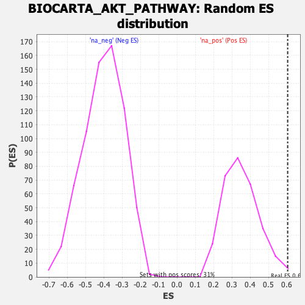

| | | Dataset | DE_genes2 |
| Phenotype | NoPhenotypeAvailable |
| Upregulated in class | na_pos |
| GeneSet | BIOCARTA_AKT_PATHWAY |
| Enrichment Score (ES) | 0.60445875 |
| Normalized Enrichment Score (NES) | 1.7290584 |
| Nominal p-value | 0.006535948 |
| FDR q-value | 0.12892713 |
| FWER p-Value | 0.584 |
Table: GSEA Results Summary
 Fig 1: Enrichment plot: BIOCARTA_AKT_PATHWAY
Fig 1: Enrichment plot: BIOCARTA_AKT_PATHWAY
Profile of the Running ES Score & Positions of GeneSet Members on the Rank Ordered List
| PROBE | GENE SYMBOL | GENE_TITLE | RANK IN GENE LIST | RANK METRIC SCORE | RUNNING ES | CORE ENRICHMENT | | 1 | NFKBIA | | | 20 | 10.048 | 0.2387 | Yes |
| 2 | BAD | | | 102 | 5.980 | 0.3766 | Yes |
| 3 | RELA | | | 137 | 5.593 | 0.5081 | Yes |
| 4 | AKT1 | | | 298 | 4.442 | 0.6045 | Yes |
| 5 | CASP9 | | | 2277 | 1.576 | 0.5223 | No |
| 6 | FOXO4 | | | 2765 | 1.304 | 0.5239 | No |
| 7 | YWHAH | | | 2983 | 1.202 | 0.5395 | No |
| 8 | IKBKG | | | 5768 | 0.391 | 0.3802 | No |
| 9 | PDPK1 | | | 6042 | 0.337 | 0.3718 | No |
| 10 | NFKB1 | | | 6140 | 0.317 | 0.3735 | No |
| 11 | FOXO3 | | | 7160 | 0.123 | 0.3147 | No |
| 12 | FOXO1 | | | 7461 | 0.072 | 0.2982 | No |
| 13 | IKBKB | | | 8649 | -0.120 | 0.2292 | No |
| 14 | GHR | | | 9196 | -0.239 | 0.2019 | No |
| 15 | PPP2CA | | | 12098 | -1.272 | 0.0566 | No |
| 16 | PIK3CA | | | 12907 | -1.721 | 0.0487 | No |
| 17 | PIK3R1 | | | 13173 | -1.874 | 0.0774 | No |
| 18 | HSP90AA1 | | | 13840 | -2.364 | 0.0935 | No |
| 19 | CHUK | | | 14423 | -2.905 | 0.1277 | No |
Table: GSEA details [plain text format]

Fig 2: BIOCARTA_AKT_PATHWAY: Random ES distribution
Gene set null distribution of ES for BIOCARTA_AKT_PATHWAY